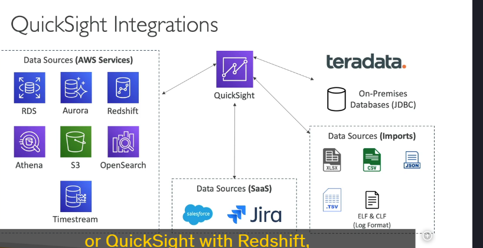

Amazon quicksight
 Amazon QuickSight là một dịch vụ business intelligence (BI) không cần máy chủ (serverless) của AWS, giúp bạn tạo các bảng điều khiển (dashboards) tương tác và trực quan hóa dữ liệu một cách nhanh chóng và hiệu quả. Dưới đây là các chi tiết quan trọng về Amazon QuickSight:
1. Tổng quan về Amazon QuickSight
- Mục đích: QuickSight được sử dụng để tạo các bảng điều khiển tương tác, trực quan hóa dữ liệu và thực hiện phân tích dữ liệu để đưa ra các quyết định kinh doanh.
- Tính năng chính:
- Serverless: Không cần quản lý cơ sở hạ tầng, tự động mở rộng (scalable).
- Tích hợp nhiều nguồn dữ liệu: Hỗ trợ kết nối với các dịch vụ AWS như RDS, Aurora, Redshift, Athena, S3, và các nguồn dữ liệu bên thứ ba.
- SPICE Engine: Công cụ tính toán trong bộ nhớ (in-memory) giúp tăng tốc độ xử lý dữ liệu.
- Column-Level Security (CLS): Chỉ có trong phiên bản Enterprise, cho phép kiểm soát quyền truy cập ở cấp độ cột.
2. Các trường hợp sử dụng phổ biến
- Phân tích kinh doanh (Business Analytics): Tạo các báo cáo và dashboard để theo dõi hiệu suất kinh doanh.
- Trực quan hóa dữ liệu: Tạo các biểu đồ, đồ thị và bảng điều khiển tương tác.
- Phân tích ad-hoc: Thực hiện các truy vấn nhanh chóng để khám phá dữ liệu.
- Đưa ra quyết định dựa trên dữ liệu: Sử dụng dữ liệu để đưa ra các quyết định chiến lược.
3. SPICE Engine
- Tính năng: SPICE (Super-fast, Parallel, In-memory Calculation Engine) là công cụ tính toán trong bộ nhớ giúp tăng tốc độ xử lý dữ liệu.
- Cách thức hoạt động:
- Dữ liệu được nhập trực tiếp vào QuickSight (ví dụ: từ Excel, CSV, JSON).
- SPICE thực hiện tính toán trên dữ liệu trong bộ nhớ, giúp truy vấn và trực quan hóa dữ liệu nhanh chóng.
- Lưu ý: SPICE chỉ hoạt động khi dữ liệu được nhập trực tiếp vào QuickSight, không hoạt động khi QuickSight kết nối với các cơ sở dữ liệu bên ngoài.
4. Tích hợp với các nguồn dữ liệu
a. Các dịch vụ AWS
- RDS: Cơ sở dữ liệu quan hệ.
- Aurora: Cơ sở dữ liệu tương thích MySQL và PostgreSQL.
- Redshift: Kho dữ liệu (data warehouse).
- Athena: Truy vấn dữ liệu trực tiếp từ S3.
- S3: Nhập dữ liệu từ các tệp lưu trữ trong S3.
- OpenSearch: Phân tích dữ liệu từ OpenSearch.
- Timestream: Trực quan hóa dữ liệu chuỗi thời gian.
b. Các nguồn dữ liệu bên thứ ba
- SaaS: Salesforce, Jira, và các dịch vụ SaaS khác.
- Cơ sở dữ liệu bên thứ ba: Teradata, các cơ sở dữ liệu on-premises sử dụng JDBC.
c. Nhập dữ liệu trực tiếp
- Hỗ trợ các định dạng tệp như Excel, CSV, JSON, TSV, và EFS CLF (log formats).
5. Phân tích (Analysis) và Bảng điều khiển (Dashboard)
- Analysis:
- Là nơi bạn tạo và chỉnh sửa các trực quan hóa dữ liệu.
- Bao gồm các bộ lọc, tham số, điều khiển và tùy chọn sắp xếp.
- Dashboard:
- Là một bản sao chỉ đọc (read-only) của một Analysis.
- Có thể chia sẻ với người dùng hoặc nhóm người dùng.
- Giữ nguyên cấu hình của Analysis (bộ lọc, tham số, v.v.).
6. Quản lý người dùng và nhóm
- Người dùng (Users):
- Được quản lý trong QuickSight (không phải IAM users).
- Có sẵn trong cả phiên bản Standard và Enterprise.
- Nhóm người dùng (Groups):
- Chỉ có trong phiên bản Enterprise.
- Giúp quản lý quyền truy cập và chia sẻ dashboard dễ dàng hơn.
- Chia sẻ Dashboard/Analysis:
- Bạn có thể chia sẻ Analysis hoặc Dashboard với người dùng hoặc nhóm cụ thể.
- Người dùng có quyền truy cập có thể xem dữ liệu cơ bản.
7. Phiên bản và định giá
- Standard Edition:
- Hỗ trợ người dùng cơ bản và các tính năng cốt lõi.
- Enterprise Edition:
- Hỗ trợ Column-Level Security (CLS), nhóm người dùng (Groups), và các tính năng nâng cao khác.
- Định giá:
- Thanh toán theo phiên (per-session pricing), giúp tiết kiệm chi phí cho các tổ chức có nhu cầu sử dụng không thường xuyên.
8. Ưu điểm của Amazon QuickSight
- Dễ sử dụng: Giao diện trực quan, dễ dàng tạo và chia sẻ dashboard.
- Tích hợp đa dạng: Hỗ trợ nhiều nguồn dữ liệu từ AWS và bên thứ ba.
- Hiệu suất cao: SPICE Engine giúp tăng tốc độ xử lý dữ liệu.
- Bảo mật: Column-Level Security (CLS) trong phiên bản Enterprise giúp kiểm soát quyền truy cập chi tiết.
9. Tổng kết
Amazon QuickSight là một công cụ mạnh mẽ để trực quan hóa dữ liệu và phân tích kinh doanh. Với khả năng tích hợp linh hoạt, hiệu suất cao nhờ SPICE Engine, và các tính năng bảo mật nâng cao, QuickSight là lựa chọn hàng đầu cho các tổ chức cần đưa ra quyết định dựa trên dữ liệu.
10. Mẹo thi AWS
- Khi gặp các câu hỏi liên quan đến trực quan hóa dữ liệu, phân tích kinh doanh, hoặc tạo dashboard, hãy nghĩ đến Amazon QuickSight.
- Hiểu rõ sự khác biệt giữa Analysis và Dashboard, cũng như cách chia sẻ chúng với người dùng hoặc nhóm.
- Nhận biết các trường hợp sử dụng SPICE Engine và Column-Level Security (CLS).